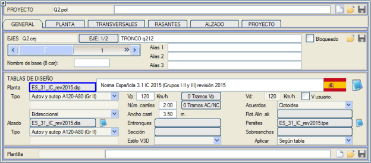
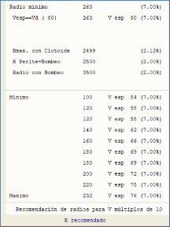
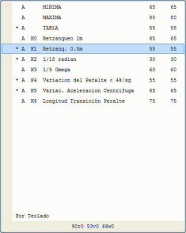
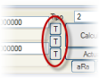
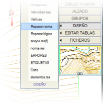
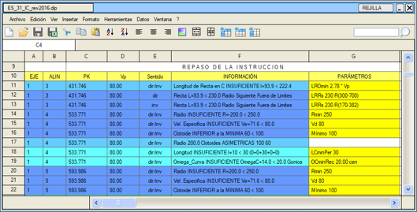
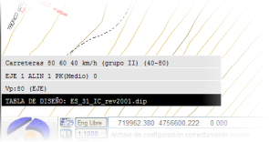
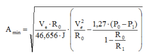

| |
|
YATAY GÜZERGAH: YÖNETMELİK UYGULAMASI (.dip TABLOLARI)
|
Genel Bilgiler Meksika Şartnameleri Brezilya Şartnameleri Kolombiya Şartnameleri Şili Şartnameleri Norveç Şartnameleri Florida Şartnameleri Genel Bilgiler Boykesit tabloları, her projede uygulanabilir geometrik standartlara uyulmasını sağlayan bir dizi parametre ve veri tablosu belirten dosyalardan oluşur. Boykesit tablosu, her eksene GENEL sekmesinden atanır: 
Bu dosyalar veya yatay güzergah tabloları .dip uzantısına sahiptir ve herhangi bir metin düzenleyici ile düzenlenebilir. Karayolları Talimatı 3.1IC'nin 2016 revizyonunda (şu anda yürürlükte olan) yer alan yönetmelik, program kütüphanesindeki ES_31_IC_rev2016.dip tablosuna karşılık gelir. Ayrıca, Karayolları Talimatı 3.1IC'nin 2015 (ES_31_IC_rev2015.dip) ve 2001 (ES_31IC_rev2001.dip) revizyonlarında yer alan yönetmelikler de mevcuttur. Her ikisi de program kütüphanesinde bulunabilir, burada diğer ülkelere karşılık gelen yönetmelikler de yer almaktadır.
Programda .dip tablolarının kullanımı Yarıçap önerisi   [R] tuşuna basıldığında, sistem, kullanıcının belirli bir hıza göre istenen değeri seçmesi için izin verilen iki sınır arasındaki yarıçap değerleri tablosunu sunar. Bu, GENEL sekmesinden eksene atanan .dip boykesit tablosundaki verilere göre yapılır. [R] tuşuna basıldığında, sistem, kullanıcının belirli bir hıza göre istenen değeri seçmesi için izin verilen iki sınır arasındaki yarıçap değerleri tablosunu sunar. Bu, GENEL sekmesinden eksene atanan .dip boykesit tablosundaki verilere göre yapılır.Eğer maksimum ve minimum yarıçaplar arasında ise, tabloda proje hızına tam olarak karşılık gelen değer gösterilir. Ayrıca, belirli hızı proje hızına en çok yaklaşan yarıçap Vp ile işaretlenir. İspanyol Karayolları Talimatı'nda, bir eksen boyunca yarıçap dizisi, belirli bir yarıçapa sahip bir elemandan sonra, kısa bir doğru olsa bile (400 m'den az), bir sonraki dairesel kurbun yarıçapının bir minimumun altına inemeyeceği veya bir maksimumu aşamayacağı şekilde koşullandırılmıştır; örneğin, 500 m yarıçaptan sonra, 264 m'den (80 km/s proje hızı için) daha küçük veya 670 m'den daha büyük bir yarıçapa sahip bir dairesel kurp olamaz. Her önerilen yarıçapın yanında, ona karşılık gelen dever de yer alır. Klotoid önerileri [T] tuşları, GENEL sekmesinden her eksene atanan .dip tablolarında açıklanan birkaç değeri gösteren bir tablo açar. Herhangi bir satır seçilirse, değer verilere aktarılır. MİNİMUM A değeri, yıldızla (*) işaretlenmiş tüm değerlerin en yükseğidir. Yıldızla işaretlenmiş bu değerler, hesaplamada yer alan değerlerdir. İletişim kutusunun alt kısmında, ilgili iki güzergah elemanının verileri sunulur ve yarıçap, hız ve omega (açısal gelişim) gösterilir. TABLO A, .dip dosyasında yazılı olan tablo değerlerinden doğrudan çıkarılır. Yönetmelik kontrolü Dikey menüdeki [TASARIM] → Yönetmeliği kontrol et seçeneğinden, GENEL sekmesinde yüklü olan .dip tasarım tablosunda yer alan karayolları talimatının gerekliliklerini karşılayıp karşılamadığını görmek için yatay güzergahı kontrol etmek mümkündür. Bu seçenek, yatay güzergah seçeneklerinde yapılandırıldığı gibi MEVCUT eksen veya yatay güzergahta tanımlanan TÜM eksenler için çalışır. Kontrol listesi, .dip dosyasının kendisinde tanımlanır. Yönetmeliğe göre kontrol yapıldıktan sonra, raporla ilgili eksen ve güzergah elemanı numarası, kullanılan yatay güzergah tasarım tablosu parametresi veya karşılaştırma değeri hakkında bilgi içeren bir veri tablosu belirir. Bu bilgi tablosunun herhangi bir hücresine tıklandığında, yatay güzergah tasarım iletişim kutusunda ilgili eleman seçilir, böylece gözden geçirme görevi kolaylaşır. Yönetmelik kontrolü her iki yönde de yapılır: ileri ve geri. Listede, söz konusu hata veya uyarının ileri, geri veya her iki yönde mi bulunduğunu belirtmek için bir sütun ayrılmıştır. Bilgi tablosunu taşır veya yeniden boyutlandırırsak, oturum boyunca yeni konumu ve boyutlarıyla kalır. Minimum yarıçaptan daha küçük yarıçaplı ve/veya tasarım hızından daha düşük hızlı kurplar varsa, kutunun sonunda ve norma.res listesinde, minimum yarıçapı ihlal eden uzunluğun yüzdesi ve tasarım hızının altında olanın yüzdesi gösterilir. Ayrıca, hesap tablolarından işlenmek üzere ./res listeler klasöründe norma_N.xlsx listesi de oluşturulur. Çalışma Yatay Güzergah/Tasarım/Yönetmelik kontrolü'nden yapıldığında, Istram'ın veri tablosu açık kalır. 
norma.res seçeneği, [TASARIM] alt menüsünde de mevcuttur ve son yönetmelik kontrolünden sonra yatay güzergahtan elde edilen hatalarla norma.res listesini oluşturur. Yatay güzergah tasarım tabloları (.dip) hakkında bazı hususlar Karayolu tasarımı ve inşası konusunda yetkili kurumlar tarafından belirtilen geometrik ve normatif kriterleri tanımlamak ve uygulayabilmek için kullanılırlar. Program kütüphanesinde çeşitli ülkelerin karayolu yatay güzergah tasarım tabloları mevcuttur. Daha önce açıklandığı gibi, GENEL açılır penceresinde, kullanıcının uygun tabloyu seçmesi için özel bir giriş vardır. Bu dosyanın adı .cej dosyasında saklanır, böylece kalıcı olarak ilişkilendirilir. Seçilen .dip tablosunun adı, çalışma alanında, ekranın sol alt kısmında görünür. Dosyadaki 'etkinleştirilmiş' elemanlar ve tablo verileri listesi, kullanıcının belirli bir güzergah elemanı için tanımlananlara uyan yarıçapları ve klotoid parametrelerini seçmesine olanak tanır. Ayrıca, bir eksenin tamamını kontrol etmeye de olanak tanır (örneğin eski bir güzergah için veya başka bir program ya da başka bir şirket tarafından yapılmışsa), diğerlerinin yanı sıra aşağıdaki kontrolleri gerçekleştirerek:
C KURPLARI özel durumu Aynı yönde dönen iki dairesel güzergah elemanı arasında, klotoid daha küçük yarıçaplı olana aittir, bu nedenle:

Bu hususlar, yönetmelik kontrolünde de dikkate alınır. Diğer hususlar Kullanıcı, .dip tablosunun önerdiğinden farklı bir proje hızı zorlayabilir, böylece her eksen, proje hızının tablodan mı çıkarılacağını yoksa kullanıcı tarafından tanımlanan kendi hızını mı kullanacağını saklayabilir. Kütüphaneler sürekli olarak farklı ülkeler için tasarım tablolarıyla beslenir. Demiryolları durumunda, tabloda kullanılan ve tanımlanan değerler tamamen farklıdır ve demiryolu eksenlerinin tasarımına ilişkin yardım bölümünde açıklanmıştır. Meksika Yönetmeliği Şartnameleri Meksika kütüphanesindeki en güncel tablolar, A (A4), A (A4S), B ve A (A2), C, D ve E kategorilerindeki yolları içeren Meksika SCT 2018 yönetmeliğine aittir:
Brezilya kütüphanesine 21/04/2021 tarihinde DNER 1999 yönetmeliği için tablolar eklenmiştir:
Bunlar, 30 km/s ile 120 km/s arasındaki tasarım hızları için maksimum dever değerine (%12, %10, %8, %6 ve %4) göre sınıflandırılmıştır. Tüm kombinasyonlar farklı yol sınıfları için geçerli değildir. Kullanıcı uygun olanı seçmelidir. Kolombiya Şartnameleri Kolombiya kütüphanesinde, tüm hesaplamalar için her zaman Vp proje hızının kullanıldığı Kolombiya yönetmeliği COLOM_rev2008c.dip tablosu bulunmaktadır. Şili Şartnameleri CHILE_MINVU_2009c.xxx Yönetmeliği için yeni DIP, DIA ve TPE tabloları hazırlanmıştır (Şubat 2021). Bu tablolar, şimdiye kadar olduğu gibi %2 çatı eğimi ile Maksimum Dever %8, %6 ve %4 alt kategorilerini ve ayrıca %2.5 çatı eğimi ile Maksimum Dever %8, %6 ve %4 için diğer üç alt kategoriyi seçmeye olanak tanır. Bu "c"ler, "b"lerin yerini alır. Norveç Şartnameleri Norveç kütüphanesine aşağıdaki tablolar eklenmiştir:
Kütüphaneye, aşağıdaki dosyaları içeren Florida yönetmelikleri eklenmiştir:
|